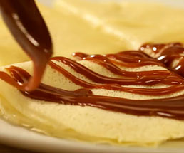
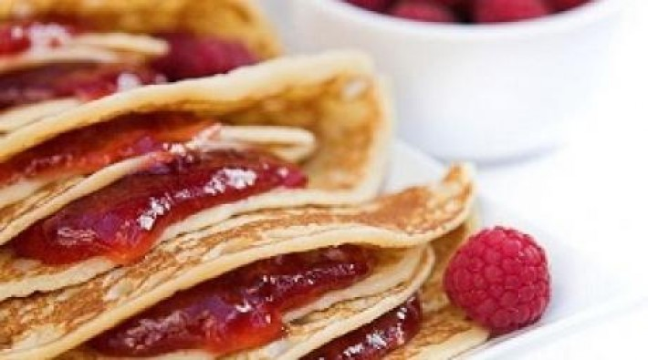
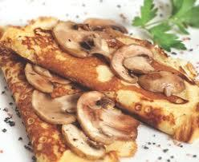
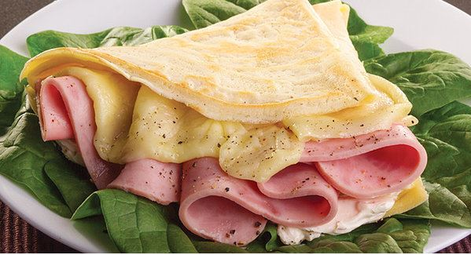
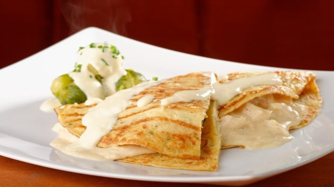

Para preparar estas crepes necesitarás dos boles. En uno de ellos mezcla la leche y la harina.
En el otro, bate los huevos con la mantequilla pomada.
A continuación, mezcla el contenido de ambos boles. Deja que la pasta repose durante 15 minutos a temperatura ambiente.
Engrasa una sartén usando papel de cocina impregnado de aceite.
Caliéntala y pon un poco de pasta en la sartén formando una crepe de aprox. 26 cm de diámetro.
Cocínala por ambos lados hasta que adquiera un tono dorado uniforme. Sirve las crepes rellenas de unos 15 g de Nutella.
CREPA DE CAJETA

INGREDIENTES:
½ kilo de harina de trigo
1 1/2 tazas de leche
1 taza de harina
2 piezas de huevo
1 cucharada de aceite
1/4 de cucharadita de sal
2 cucharaditas de azúcar
1 taza de cajeta o dulce de leche
1 taza de leche o la cantidad necesaria
1/4 de taza de nuez picada (opcional)
PREPARACIÓN:
Se ponen todos los ingredientes (menos la cajeta y la nuez) en la licuadora y se licuan.
Se calienta un sartén redondo pequeño con unas gotitas de aceite (se puede distribuir por el sartén con una servilleta para que no quede grasoso).
Con una cuchara honda se sirve un poco de la mezcla en el sartén, asegurando que cubra todo el sartén y se deja cocinar unos 45 segundos hasta que este doradita por abajo.
Se repite lo mismo hasta hacer todas las crepas. Se acomodan en un platón engrasado doblándolas en cuatro.
En una cacerola se pone cajeta, un poquito de leche y se calienta hasta que quede con la consistencia deseada (no hervirla).
Se pone la salsa de cajeta caliente sobre las crepas y se espolvorean con nuez picada. Se pueden meter al horno para calentar, o servir inmediatamente.
CREPA DE MERMELADA

INGREDIENTES:
150 gr. de harina
4 huevos
50 gr. de mantequilla
1 vaso de leche
1/2 cucharadita de sal
200 gr. de mermelada de fresa
100 gr. de azúcar glas
PREPARACIÓN:
Batir los huevos con la sal.
Calentar la mantequilla hasta que se funda.
Pasar la harina por un tamiz fino y mezclarla con las yemas, incorporar la leche y mezclar, sin batir.
Cubrir el recipiente y dejar reposar 2 horas.
Engrasar una sartén con mantequilla y echar un poco de la preparación anterior.
Mover el sartén para que la masa se extienda por toda la superficie.
Dejar que se dore por una cara y darle la vuelta para que se dore por la otra.
Rellenar las crepas con la mermelada.
Doblarlas 2 veces por la mitad.
Espolvorearlas con el azúcar.
CREPA DE CHAMPIÑONES

INGREDIENTES:
INGREDIENTES DE LA PASTA PARA HACER LAS CREPAS
15 gramos de mantequilla.
1 Huevo.
1 Taza de leche.
100 gramos de Harina
1/8 de cucharadita de sal
Un poco de aceite.
1 cdta. Sal
INGREDIENTES PARA LA SALSA.
¼ de taza de leche pasteurizada.
190g o el equivalente a 1 barra de Queso Crema.
2 chiles poblanos asados y desvenados.
2 cucharaditas de caldo de pollo en polvo
2 cucharadas soperas de fécula de maíz.
Sal al gusto.
INGREDIENTES PARA EL RELLENO DE LAS CREPAS
4 tazas de champiñones lavados y fileteados (cortar en tiras finas y alargadas).
¼ de taza de cebolla fileteada.
2 chiles poblanos asados y desvenados.
2 cucharadas de perejil.
2 dientes de ajo picado.
3 cucharadas de aceite.
1 cucharadita de caldo de pollo en polvo.
6 rebanadas de queso Manchego.
PREPARACIÓN:
1. Derrite la mantequilla.
2. Licua el huevo, la leche, la harina, la sal y la mantequilla derretida hasta que todos estos ingredientes se integren bien.
3. Moja con un poco de aceite una servilleta o bien un poco de mantequilla y pásala por el sartén caliente a fuego bajo, realiza este paso cada vez que vayas a hacer una crepa.
4. Vacía una cucharada grande de pasta, moviendo circularmente la sartén hasta cubrir todo el fondo, trata de formar un círculo que no quede muy grueso.
5. Cocina la crepa por dos minutos o hasta que dore un poco, luego con ayuda de una pala de madera voltéala para cocinar nuevamente por dos minutos.
6. Precalienta el horno 10 minutos a 180°C.
7. Calienta aceite en una sartén para acitronar la cebolla y el ajo.
8. Enseguida agrégale los champiñones, el perejil y el consomé de pollo en polvo. Cocina por 15 minutos.
9. Retira del fuego el relleno y deja que enfríe un poco.
10. Licua todos los ingredientes de la salsa.
11. Rellena las crepas con la mezcla de los champiñones y ve acomodándolas en un refractario rectangular.
12. Baña las crepas con la salsa y encima ponle las rebanadas de queso manchego.
13. Hornea las crepas por 15 minutos a 160°C y sirve.
CREPA DE JAMON Y QUESO

INGREDIENTES:
150 g de Queso Crema Philadelphia® Untable
150 g de jamón de pavo en rebanadas
1 taza. De harina de trigo
1 ½ taza. De leche
2 pzas. De huevo
2 cdas. De mantequilla fundida
1 cdita. De sal
PREPARACIÓN:
Licuar los ingredientes de la crepa y refrigerar durante 30 minutos.
Verter un poco de mezcla de crepas en un sartén caliente y formar la crepa, dar vuelta y dejar cocer.
Untar queso crema Philadelphia® y colocar una rebanada de jamón.
Enrrollar y cortar en rebanadas de aproximadamente 2 cm de grueso.
Colocar un pincho y servir acompañado de lechuga.
CREPA DE POLLO

INGREDIENTES:
1 taza de harina
¼ cucharada de sal
3 huevos
1 ¼ tazas de leche
2 cucharadas de mantequilla (derretida)
5 cucharadas de mantequilla
4 dientes de ajo
1 ¼ tazas de leche
2 cucharadas de tomillo picado
2 ½ tazas de pechuga de pollo en tiras
1/3 taza de queso crema
2 cucharadas de perejil picado
PREPARACIÓN:
Precalienta el horno a 175°.
Crepas: en un tazón, combina la harina y la sal. En otro tazón bate los huevos con la leche y la mantequilla derretida. Bate la mezcla junto con la harina hasta que se combinen bien. Cubre y refrigera por 1 hora. Pasa la mezcla a un tazón limpio.
Calienta una sartén de teflón a fuego medio. Rocía con aceite.
Vacía aproximadamente ¼ de taza de la masa en el centro de la sartén, moviéndolo para que la mezcla se esparza. Cocina por aproximadamente 1 minuto o hasta que la masa se ponga dorada. Voltea y cocina por 30 segundos. Ponla en un plato. Repite con el resto de la masa.
Pollo: en una sartén derrite 3 cucharadas de mantequilla a fuego medio, junto con el ajo y el tomillo. Añade el pollo y mezcla por aproximadamente 5 minutos. Vacía el queso crema hasta que se derrita. Retira del fuego y añade pollo al centro de cada crepa y dóblala. Acomoda las crepas en un refractario. Derrite las 2 cucharadas de mantequilla restantes y vacía sobre las crepas.
Pon el refractario en el horno por aproximadamente 10 minutos.